Browser, reader, notes, citations, lecture capture and research organisation — all in one place. That's the difference.
Most browsers give you bookmarks. Brink gives you a full research workspace — folders, subfolders, saved websites, notes, images, recordings and citations all living together.
The sidebar stays open alongside your browsing. Create nested folders for each module, subject or project and drag research between them. Everything is persistent — close the app and come back exactly where you left off.
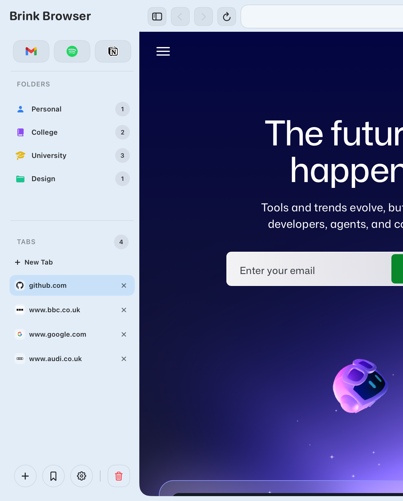
Brink lets you save far more than just links. Capture a page, a note, an image, a lecture recording or a citation — all into the same folder, all searchable, all together.
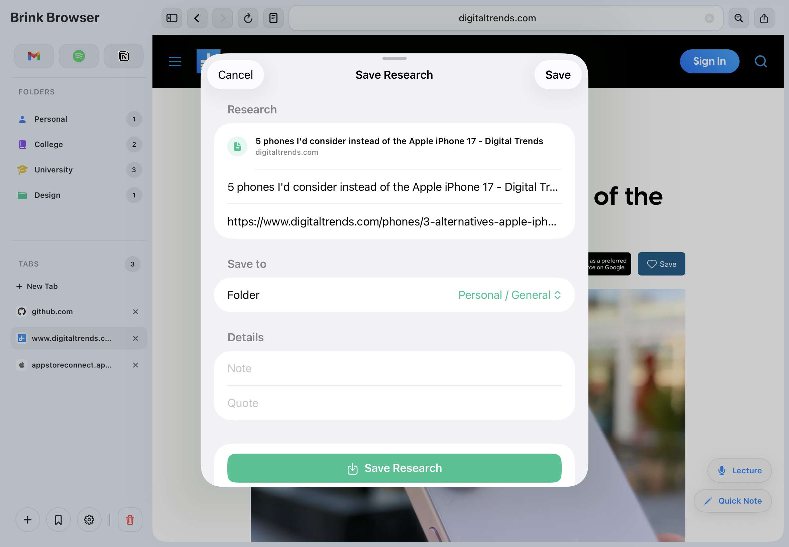
Select any text on a webpage and highlight it in yellow, green, blue or red. Highlights are saved with the page so they're still there when you return. Use them to extract the most important parts of an article straight into your research.
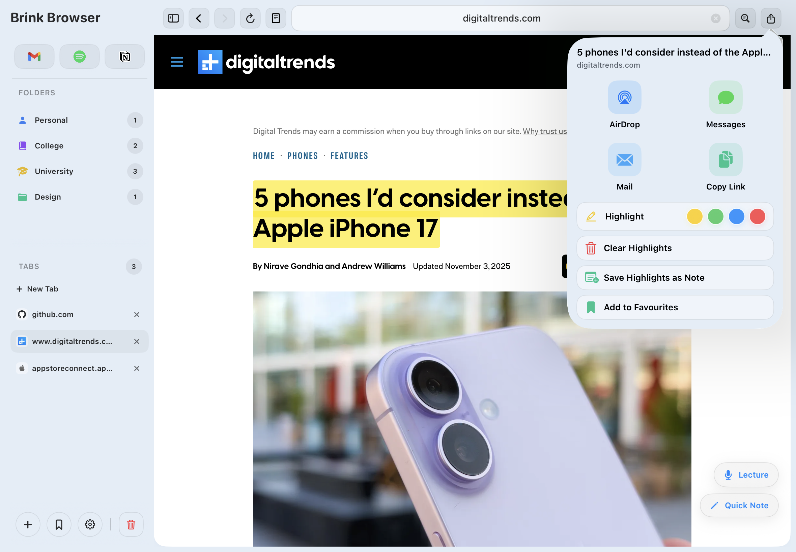
Select Harvard, APA or MLA and Brink formats a citation from any saved research item instantly. Copy it straight into your essay — no manual formatting, no switching to a separate citation tool, no hunting for author names.
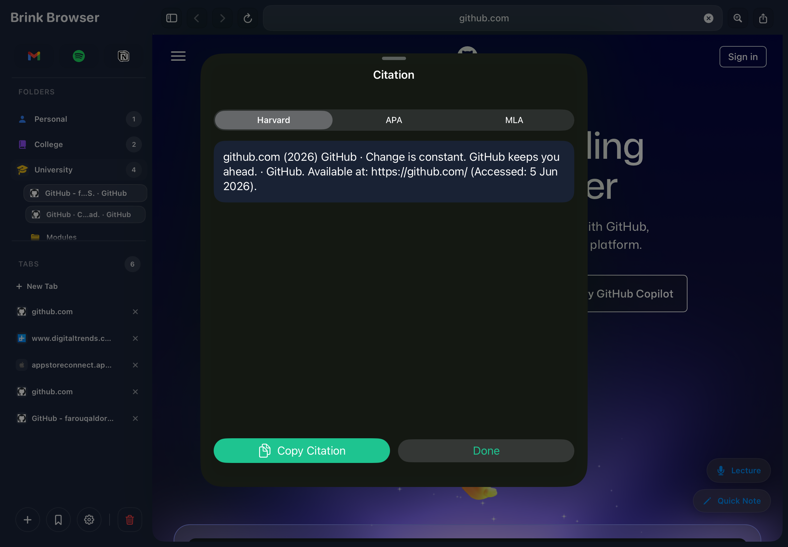
Most browsers strip an article and call it reader mode. Brink goes much further with full typography controls, reading progress, time estimates and distraction-free full-screen study.
One tap removes everything except the content — ads, navigation, cookie banners, autoplay. Then customise every aspect of how you read so articles feel like books, not websites.
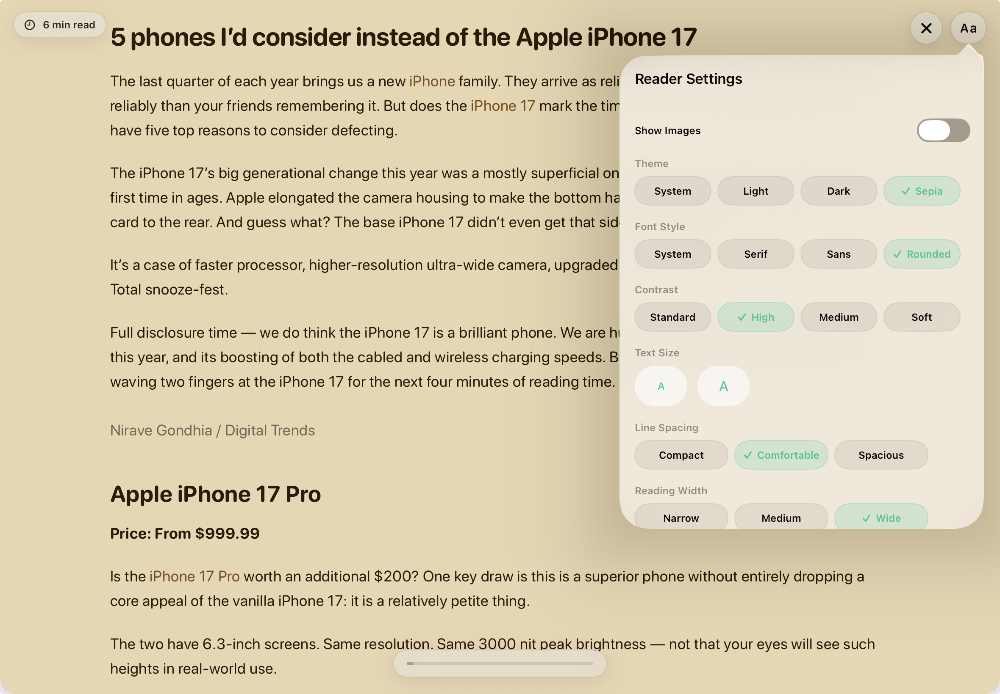
Open any PDF directly in Brink — whether it's a form from the web or a document you've saved to your research. Fill in text fields, check boxes and annotate pages, then save your changes directly back to your research folder. Your edits persist every time you reopen the file.
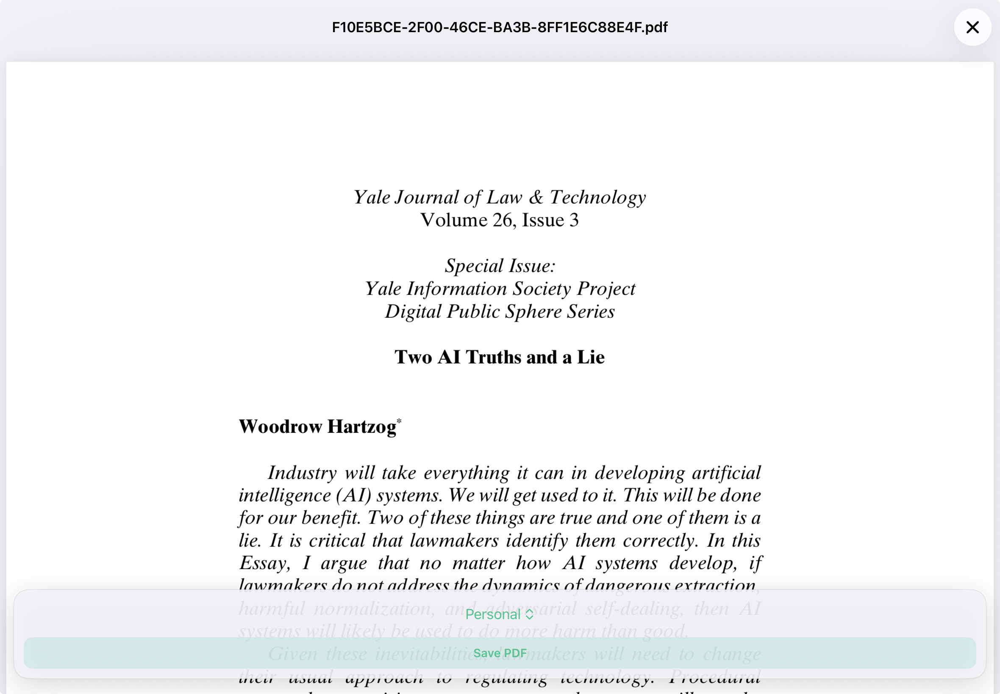
Website blocking with PIN protection, timed focus sessions and lecture recording — the tools that actually change how productively you study.
Add any site to your blocked list and it's gone. Use permanent blocking for sites you never want to see, or activate study mode blocking that only applies during a focus session — so you can choose when to enforce it.
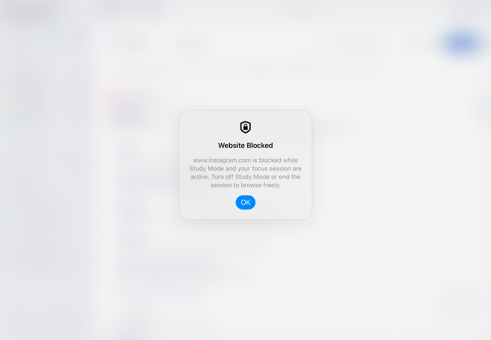
Start a focus session and Brink enforces your blocked site list for the duration. A quiet pill in the corner counts down your remaining time. When the session ends, your blocked sites are released automatically.
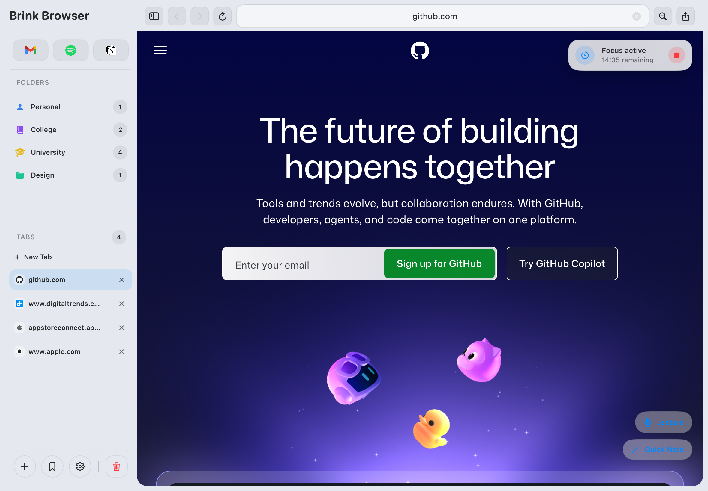
Start a recording inside Brink and it runs in the background while you browse. Recordings are saved directly into your research folders alongside the pages you were reading — so your audio and sources stay linked automatically.
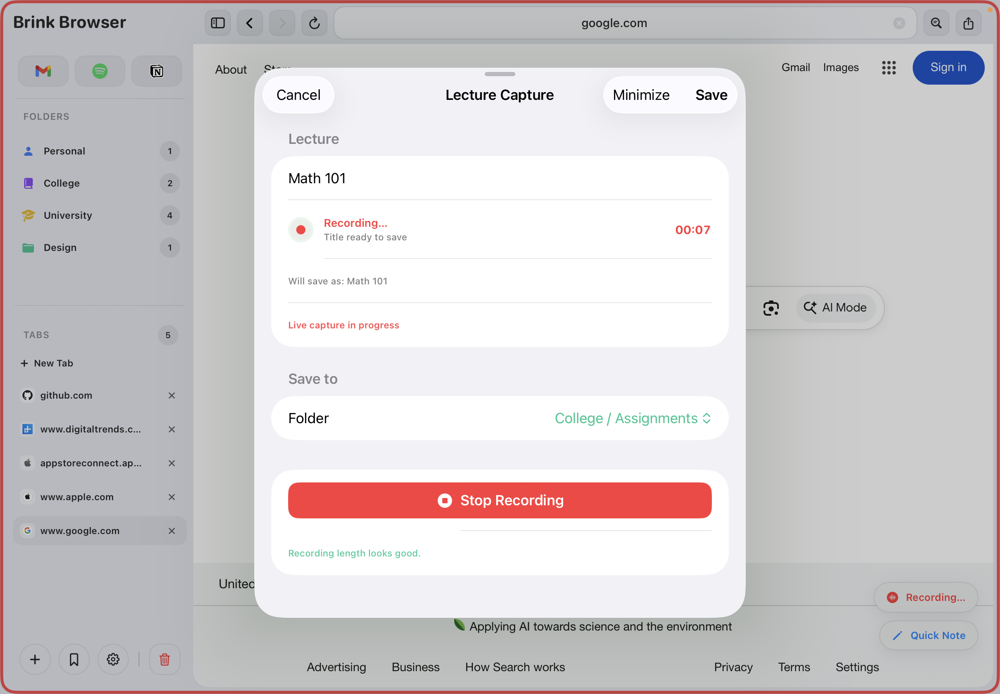
No ads, no tracking, no data collection — ever. Plus a personalisation system that makes the whole workspace feel like yours.
Brink blocks ads and trackers at the network level before they reach the page — no extensions required, no setup. Pages load faster, look cleaner and contain fewer distractions. Better for reading, better for studying.
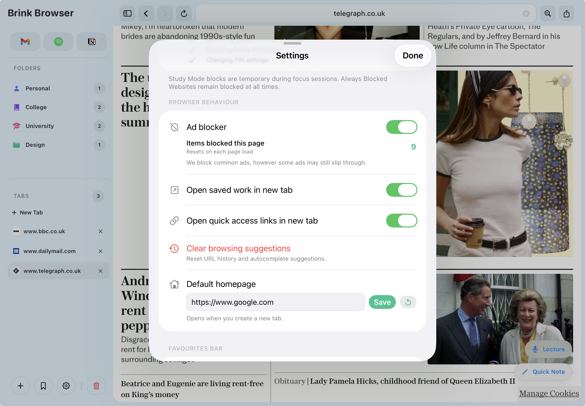
Choose from ten workspace colours — soft pastels in light mode and rich dark tones in dark mode. Every border, icon and surface updates together. Switch your system theme and Brink follows automatically, always showing only colours that work for your current mode.
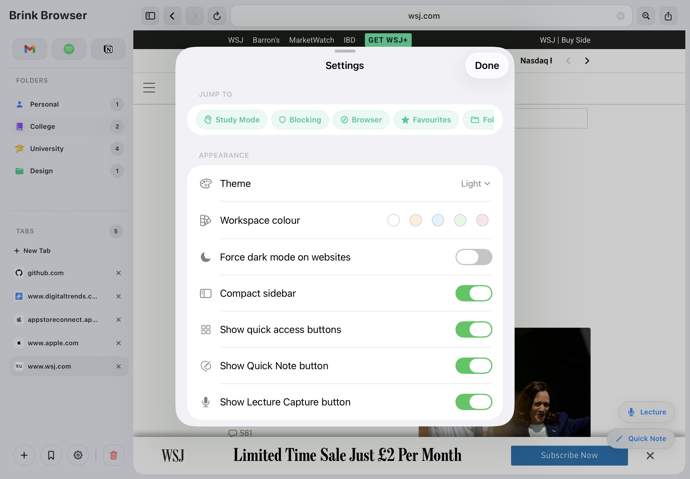